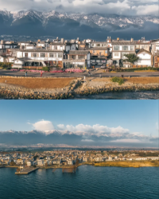
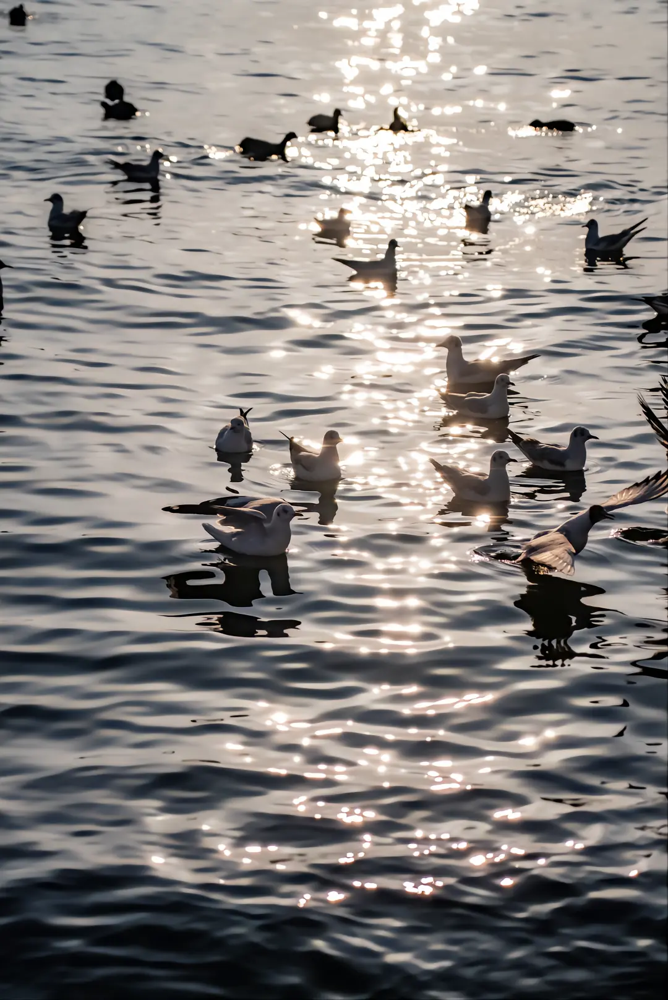
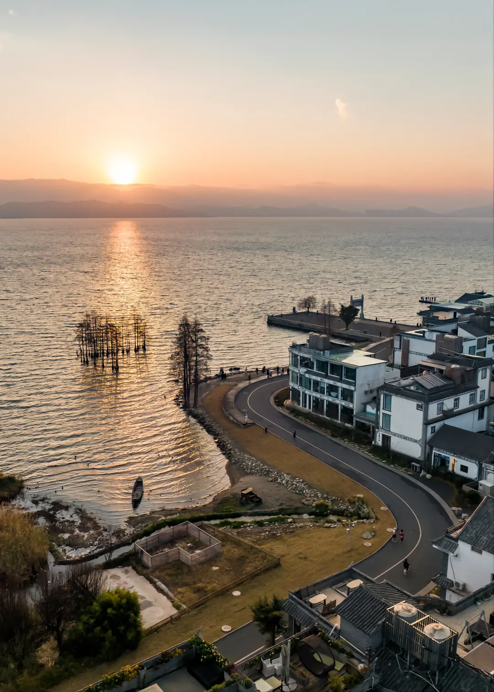

首页 | 登录 | 注册
大理欢迎你
大理（Da Li）位于云南中部的一美丽座城市（Noonu Atoll）中，它是一座拥有醉人景色和浪漫气氛的小城。 晶莹的海水、绵白的沙滩、明媚的阳光、温馨的海边小屋、浪漫的海上落日。所有的一切似乎都为浪漫而存在，美丽而遗世独立。
最佳旅游时间： 1月-12月 ，热带气候，全年皆适合旅游。 12月至次年4月 可避开高峰。
大理洱海边的房屋构造很独特，即有云南风情又有现代美感的屋子，朴实无华切浪漫优雅 ......[详细]
大理古城：大理风光等你来寻！
2020.04.21 来源：旅游家
大理古城位于云南省西部，又名叶榆城、紫城。古城其历史可追溯至唐天宝年间，南诏王阁逻凤筑的羊苴咩城，为其新都。古城始建于明洪武十五年（1382年），占地面积3平方公里。



HXZ9_ITC 2015-4-2 15:38:37
第一次来大理，太让我们惊喜了！真的很不错，行程安排的也很好！幸运的是，往返飞机都没有延误！大理的美，让我们的蜜月越发美满！
来自：驴友 www.yiriyou.com
外星人 2020-3-2 15:05:37
小城还可以，就是屋有虫子，不太让人满意，水屋确实挺棒的。饭嘛，国外基本都那样吧，海鲜还行。
来自：驴友 www.yiriyou.com
so_cool 2020-2-14 10:38:36
行程安排挺好的，挺喜欢大理，岛上的人很热情，手机丢了小黑给找回来了，都很热情，会主动跟你招呼！